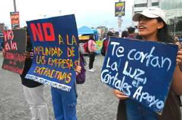
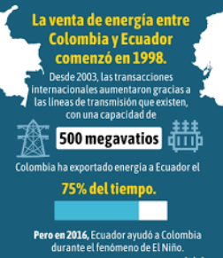

Colombia está dando pasos para reactivar la venta de electricidad a Ecuador, una medida que podría concretarse en los próximos días, en medio de la grave crisis energética que vive el país vecino. El 12 de noviembre de 2024, el Ministerio de Energía y Minas de Colombia presentó un proyecto de resolución que permitiría reanudar las exportaciones de electricidad, tras haberlas suspendido a finales de septiembre debido a la sequía que afecta a ambos países.
Alejandro Castañeda, presidente de la Asociación Nacional de Empresas Generadoras de Colombia (Andeg), afirmó que la iniciativa cuenta con el respaldo del sector energético colombiano. La resolución podría permitir que Colombia envíe excedentes de energía termoeléctrica e incluso hidroeléctrica, si las condiciones lo permiten. Se espera que la resolución sea aprobada pronto, después de que el sector eléctrico haga sus observaciones, y podría firmarse a finales de la semana.
Aunque Colombia tiene capacidad para exportar hasta 450 megavatios, aún no se sabe cuánta electricidad podrá enviar a Ecuador, ya que los embalses del país vecino no han alcanzado los niveles esperados. Hasta el 12 de noviembre, los embalses de Colombia estaban por debajo de la meta prevista para finales de mes, lo que limita la cantidad de energía disponible.
Mientras tanto, la ministra de Energía de Ecuador, Inés Manzano, también está trabajando para concretar la compra directa de electricidad a empresas privadas colombianas. Manzano señaló que están a punto de firmar un contrato para adquirir unos 100 megavatios, aunque para que esta transacción se haga efectiva, Colombia debe emitir una nueva regulación interna, un proceso que todavía está en marcha.
Fuente: Primicias
El gobierno de Daniel Noboa no ha logrado cumplir con sus promesas de reducir los cortes de luz en Ecuador, que han ido aumentando en duración. A finales de octubre de 2024, los apagones llegaron a durar hasta 14 horas, afectando especialmente a negocios en Quito. Aunque inicialmente el gobierno había prometido que los cortes serían cortos y puntuales, la realidad ha sido otra: desde abril, los apagones han oscilado entre 4 y 14 horas, y han sido más frecuentes.
A pesar de que en abril la entonces ministra de Energía, Andrea Arrobo, aseguró que los cortes estaban descartados, poco después comenzaron a aplicarse racionamientos de 8 horas diarias. Esto, junto con otros problemas, llevó a su salida del cargo. Aunque hubo una breve mejora en los cortes entre mayo y agosto, la crisis se intensificó de nuevo en septiembre, con apagones de hasta 10 horas.
En octubre, el nuevo ministro de Energía, Antonio Gonçalves, anunció que los cortes se reducirían a 4-5 horas, gracias a las lluvias y al uso de plantas térmicas, pero pronto se volvieron a alargar. Finalmente, Gonçalves renunció a principios de octubre, admitiendo que las medidas tomadas no fueron suficientes para resolver la crisis.
Fuente: Primicias
 